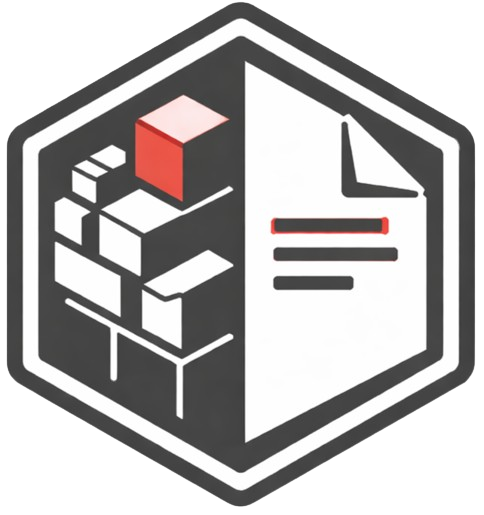

PROJECT
blk2txt
Deterministic offline Bitcoin Core block-file inspection and archival.

ZZX-LABS R&D // SOFTWARE // WEB MIRROR
Offline Bitcoin Core blk*.dat decoder for deterministic block and transaction text archives, including headers, txids, wtxids, scripts, witness stacks, output values, OP_RETURN extraction, and markers.json annotations.
OFFLINE BLOCK FORENSICS
RAW BITCOIN BLOCK INPUT
BLOCK HEADERS
| # | Hash | Version | Time | Bits | Nonce | TXs |
|---|
TRANSACTION-BY-TRANSACTION
MEMO / DATA EXTRACTION
| Block | TXID | Vout | Hex | UTF-8 / ASCII |
|---|
HISTORIC ANNOTATIONS
DETERMINISTIC TEXT ARCHIVE
PROJECT
Deterministic offline Bitcoin Core block-file inspection and archival.
PARSER
The browser parser reads Bitcoin serialization directly, including SegWit marker/flag, witness stacks, stripped serialization for txid, full serialization for wtxid, and scriptPubKey bytes.